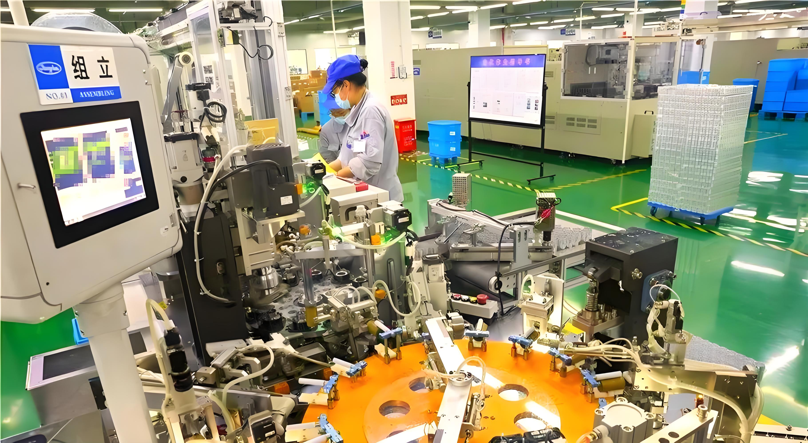
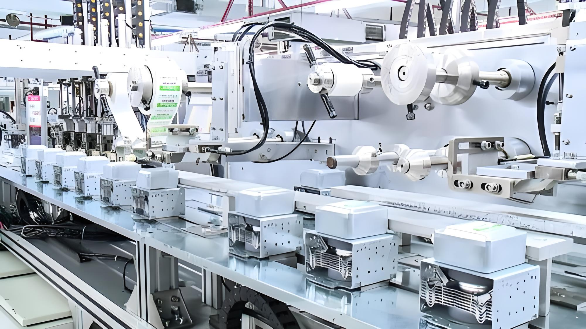
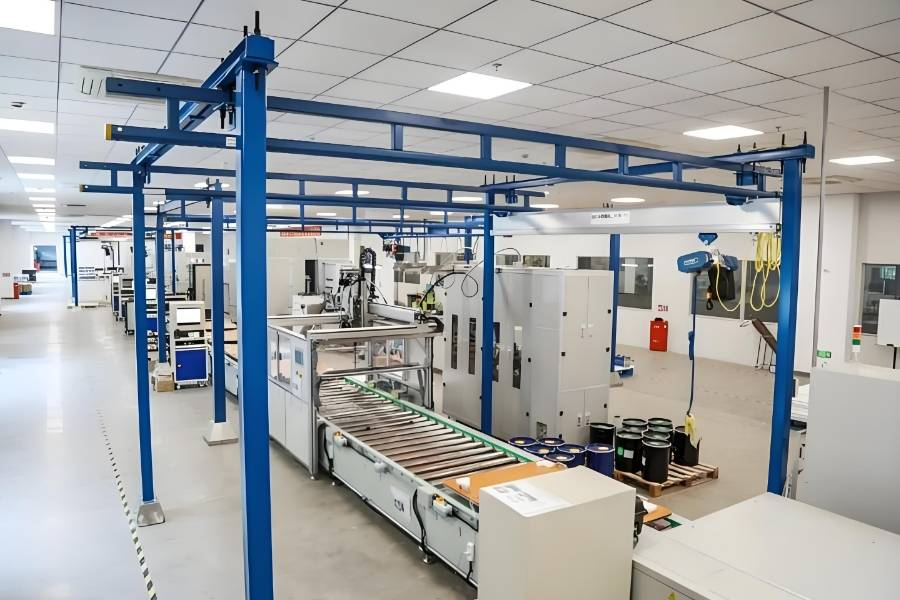

TV/商用显示
柔性装配产线
打破超大尺寸显示屏组装的物理极限。为 65寸至110寸 超级商显及教育机，提供从 OC卡合、自动点胶、无损翻转画检，到自动打螺丝与后段套袋码垛的完整闭环。
攻克大尺寸力学难题
采用独家抬升装置与180度重载翻转单元，彻底告别碎屏风险。
高精度点胶与贴合
±0.2mm定位精度的单轴机器人多胶枪协同，提升密封性能。

关键指标
99.9% 良品率

关键指标
15s 节拍/件
冰箱
自动化生产线
面向refrigerator整机组装的全自动化产线解决方案。从零部件上料、预组装、主体合装到最终检测包装，实现全程自动化。
整线自动化集成
从零部件到成品refrigerator的全流程自动化。
高节拍高产能
高节拍设计，满足大规模量产需求。
包装与物流
自动化产线
涵盖产线后段包装、输送、分拣全流程的物流自动化系统集成解决方案。
全自动包装
开箱、成型、套箱一体化完成。
智能分拣系统
高效准确的自动分拣与归类。

关键指标
20s 包装节拍

关键指标
30s 节拍/台
洗衣机
自动化生产线
面向洗衣机整机组装的全自动化产线解决方案，覆盖从零部件到成品的全流程自动化装配与检测。
整机组装自动化
从零部件到成品的全流程自动化。
质量检测集成
在线检测，确保每台产品品质。
电容器
自动化生产线
针对电容器生产的专用自动化解决方案，实现高效、精准的电容器组装与检测。
精密元件组装
高精度装配设备确保产品质量。
自动检测分选
在线检测分选，保证产品一致性。

关键指标
99.5% 良品率

关键指标
25s 节拍/台
ac
自动化生产线
面向ac室内外机整机组装的全自动化产线解决方案，实现高节拍、高品质的量产目标。
高节拍生产
满足大规模ac生产的产能需求。
质量保障体系
全程质量检测与追溯。
微波炉
自动化生产线
面向微波炉整机组装的全自动化产线解决方案，实现高效、低成本的大规模生产。
高效装配
自动化装配提升生产效率。
品质一致
标准化作业保证产品一致性。

关键指标
20s 节拍/台

关键指标
30s 节拍/台
咖啡机机
自动化生产线
面向咖啡机机整机组装的全自动化产线解决方案，实现精密装配与高效生产的完美结合。
精密装配
高精度设备确保装配质量。
功能测试
在线功能测试与品质把控。
平板电脑电脑
自动化生产线
面向平板电脑电脑整机组装的全自动化产线解决方案，实现精密元器件的高效装配。
精密装配
高精度点胶与贴合设备。
视觉检测
AI视觉系统保障产品质量。

关键指标
±0.1mm 装配精度

关键指标
99.8% 良品率
车灯
自动化生产线
面向汽车车灯总成组装的全自动化产线解决方案，实现高精度、高可靠性的车灯生产。
精密定位
高精度装配确保车灯光学性能。
密封检测
严格的气密性检测保障产品可靠性。
机器人
单元设备
以机器人为核心的模块化单元设备，可根据工艺需求灵活配置和集成，适配各种自动化场景。
模块化设计
可根据需求灵活配置。
快速集成
缩短项目交付周期。

关键指标
±0.05mm 重复精度